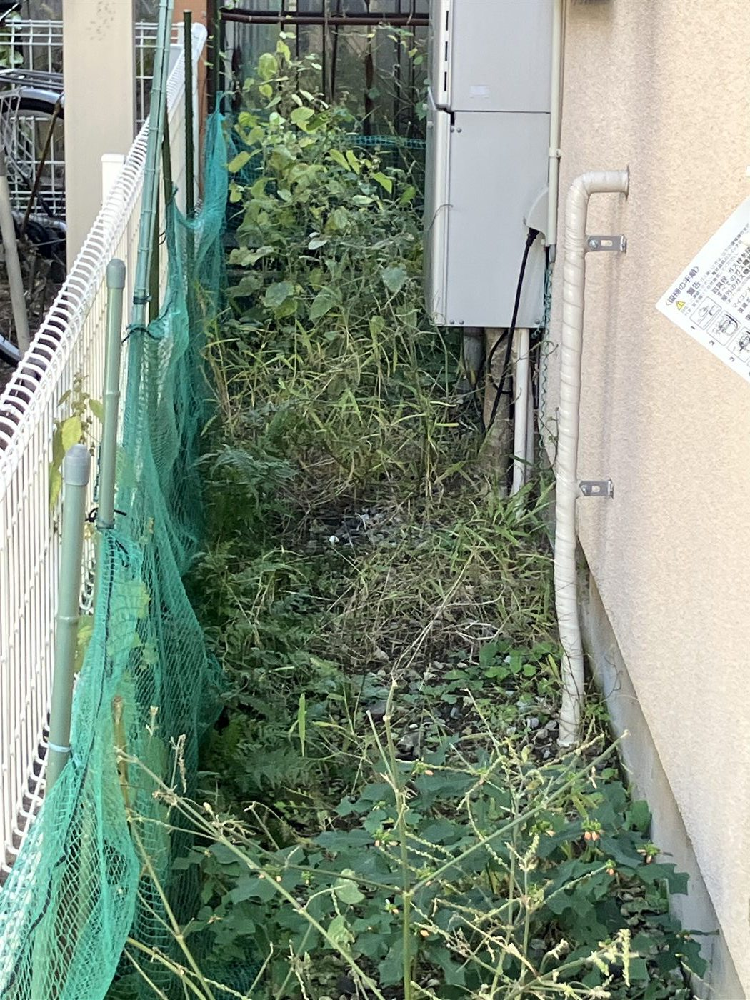
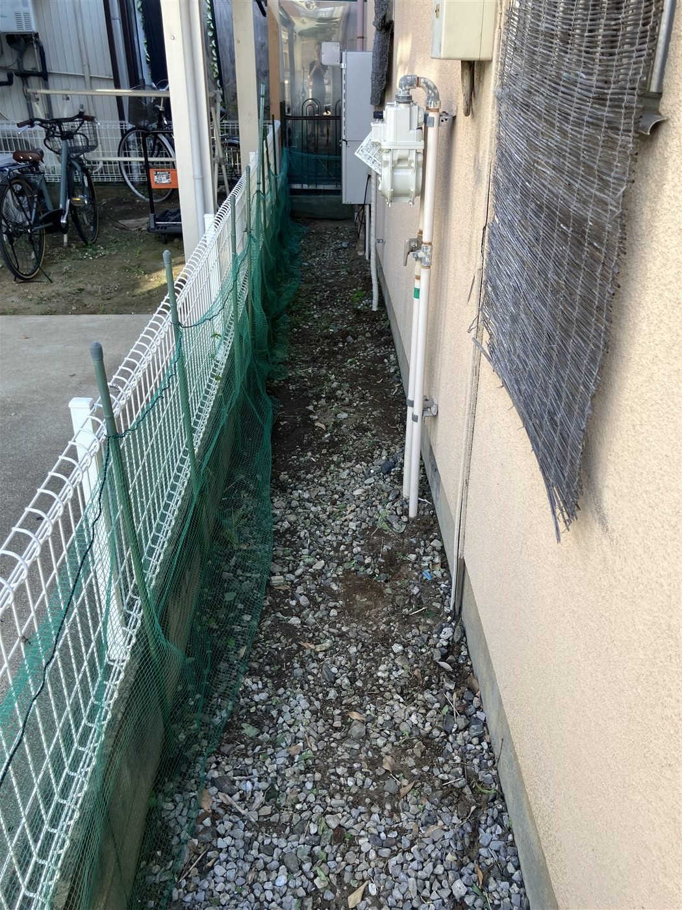
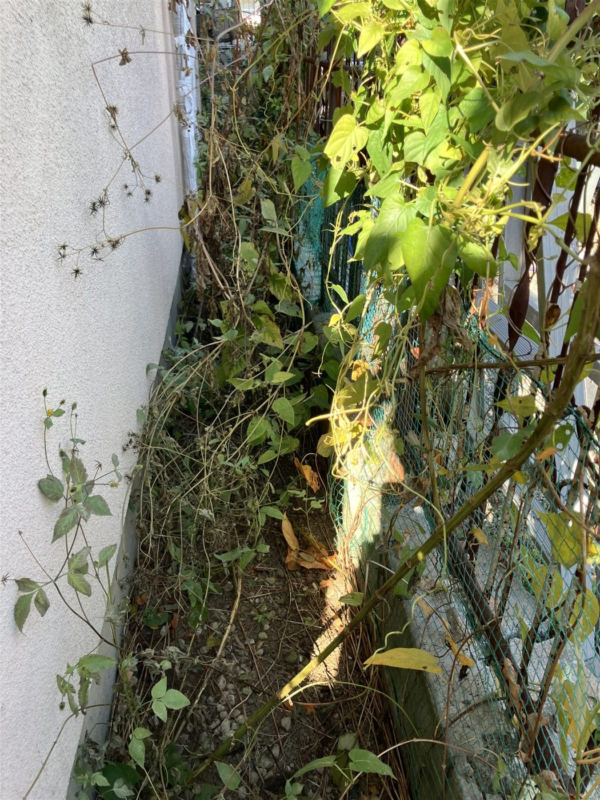
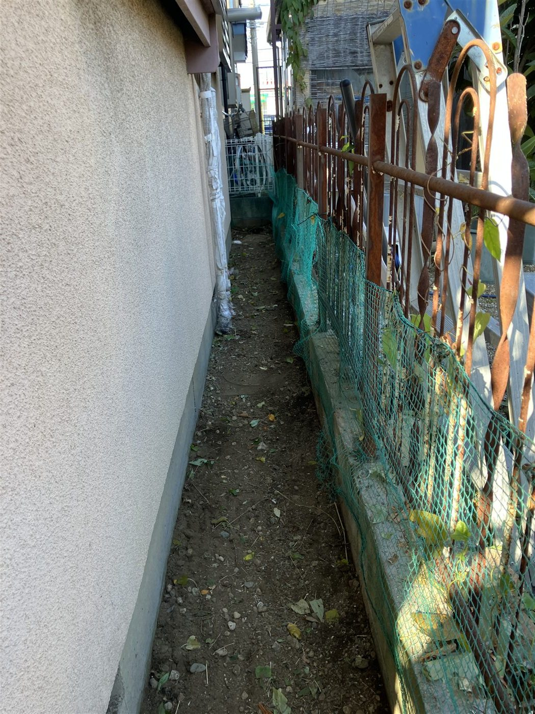

2026-07-05｜空き家・住まい
空き家の雑草除去を行いました
建物まわりと裏手の雑草を整理し、通路や外まわりの状態が確認しやすくなりました。
2026-07-05｜空き家・住まい
建物まわりと裏手の雑草を整理し、通路や外まわりの状態が確認しやすくなりました。
遠方にお住まいの場合、空き家やご実家の庭まわりの状態は見えにくくなります。雑草や枝が伸びると、通路が通りにくくなるだけでなく、建物まわりの点検もしづらくなります。
今回は、建物横の細い通路と裏手を中心に雑草を除去しました。作業前後の写真を残すことで、ご家族が現地に行けない場合でも状況を確認しやすくなります。




空き家の管理では、作業したかどうかだけでなく、どの場所がどの程度変わったかを残しておくことが大切です。写真があると、ご家族間で状況を共有しやすく、次に確認すべき場所も整理しやすくなります。
雑草、庭木、郵便物、外壁まわりなどは、少しずつ変化します。定期的に見ておくことで、防犯面や近隣への影響にも早めに気づきやすくなります。
空き家やご実家の状態確認、庭まわりの簡易確認についてもご相談ください。
相談窓口へ戻る